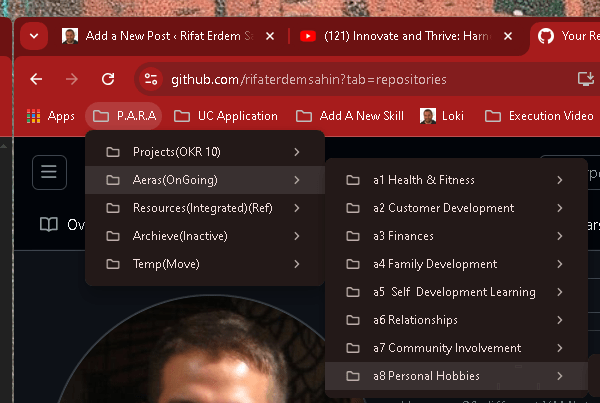
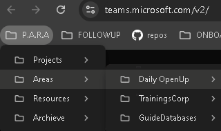

🧠 Mastering Productivity with Thiago Forte’s PARA Method: A Simple Guide
Gets Used Less > Now moving to resources

Used Much More > Action oriented open tab with multi browser tabs

Sure! Here’s a blog post about Thiago Forte’s PARA method with some emojis to make it more engaging:
🧠 Mastering Productivity with Thiago Forte’s PARA Method: A Simple Guide
In today’s fast-paced world, managing information effectively is crucial. Thiago Forte’s PARA Method is a powerful organizational system designed to help you stay on top of things and work smarter, not harder! Whether you're a creative professional, entrepreneur, or student, PARA can help you streamline your workflow and gain clarity on your priorities. Ready to dive in? Let’s break it down! 💡
What is the PARA Method? 🤔
PARA stands for Projects, Areas, Resources, and Archives. It’s a framework that categorizes everything in your life and work into four simple buckets. This helps you manage tasks, information, and goals more efficiently.
Here’s a quick overview:
-
Projects 🎯 – Short-term efforts you're actively working on.
-
Areas 📊 – Long-term responsibilities that you maintain over time.
-
Resources 📚 – Reference materials you use to support your projects and areas.
-
Archives 🗂️ – Inactive or completed items you want to keep for future reference.
Using PARA in Everyday Life 🌟
Here’s how to apply the PARA method to different areas of your life:
1. Projects 🎯
These are the actionable things you’re working on right now. They have clear deadlines and goals. For example, “Create a presentation for the team meeting next week” or “Finish the draft of my novel by the end of the month”. Keep them organized in a dedicated folder or app so you can track progress easily.
Tip: Stay focused on active projects, and don’t let too many pile up! 📅
2. Areas 📊
These are ongoing responsibilities that don’t have a deadline but still need regular attention. Examples include "Health", "Finances", or "Career development". For each area, outline key actions or habits that ensure things are running smoothly.
Tip: Regularly review your areas to make sure nothing is falling behind! 🛠️
Tip:2 MAKE THEM ACTION ORIENTED AND DAILY OPENERS!🛠️
3. Resources 📚
Resources are for anything that supports your projects and areas—think notes, articles, templates, and tutorials. Keep your resources well-organized in digital folders or note-taking apps like Evernote or Notion, so they’re easy to find when you need them!
Tip: Don’t let your resources clutter up! Archive or delete what’s no longer relevant. ✨
Tip:2 REFERENCED RESOURCES🛠️
4. Archives 🗂️
Once a project is complete or a resource is no longer needed, move it to the Archives. This keeps your active workspace clean and focused, but you’ll still have access to important information when you need it.
Tip: Think of archives as a treasure trove of past work. It’s always there for future reference or inspiration! 💡
Why PARA Works So Well 🚀
PARA is incredibly flexible and easy to use because it’s designed to fit any digital system. Whether you're using Google Drive, Dropbox, or Notion, PARA can be applied seamlessly. It helps reduce mental clutter, so you can focus on what truly matters. 🎯
By breaking down your life into these four categories, you can quickly assess where your attention is needed most. No more digging through endless files or stressing over forgotten tasks!
How to Get Started with PARA 🔑
-
Set up your folders 🗂️ – Create a folder for each PARA category.
-
Sort your current tasks 📑 – Place your ongoing projects, resources, and areas into the appropriate folders.
-
Regularly review 🔄 – Check in on your PARA system weekly to keep everything up-to-date.
Final Thoughts 💭
Thiago Forte’s PARA method is a game-changer for anyone looking to level up their productivity. By organizing everything into Projects, Areas, Resources, and Archives, you create a clear system for managing your life and work. Plus, it’s simple enough to get started right away! 🎉
So, what are you waiting for? Implement PARA today and see how much more focused and productive you become! 🚀
🔗 Connect with me:
-
💼 LinkedIn: https://www.linkedin.com/in/rifaterdemsahin/
-
🐦 Twitter: https://x.com/rifaterdemsahin
-
🎥 YouTube: https://www.youtube.com/@RifatErdemSahin
-
💻 GitHub: https://github.com/rifaterdemsahin
Imported from rifaterdemsahin.com · 2025